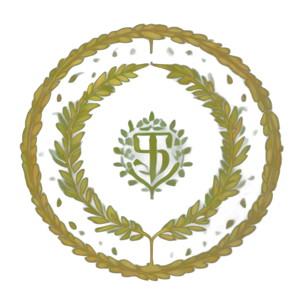

Vergel
Sembrando la isla…
⛶
☰
»
CORRER
⌄
AGACHAR
⌃
SALTAR
W A S D
moverse ·
ratón
mirar
Shift
correr ·
Ctrl
agacharse
Espacio
saltar ·
F
volar ·
Esc
pausa

LEMI
una isla que se dibuja sola
▶ Jugar
Otra isla
En pausa
Reanudar
Reiniciar
Menú